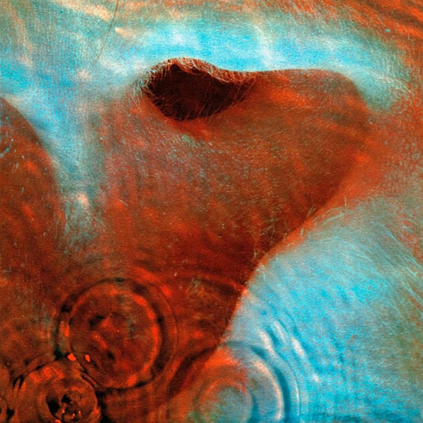
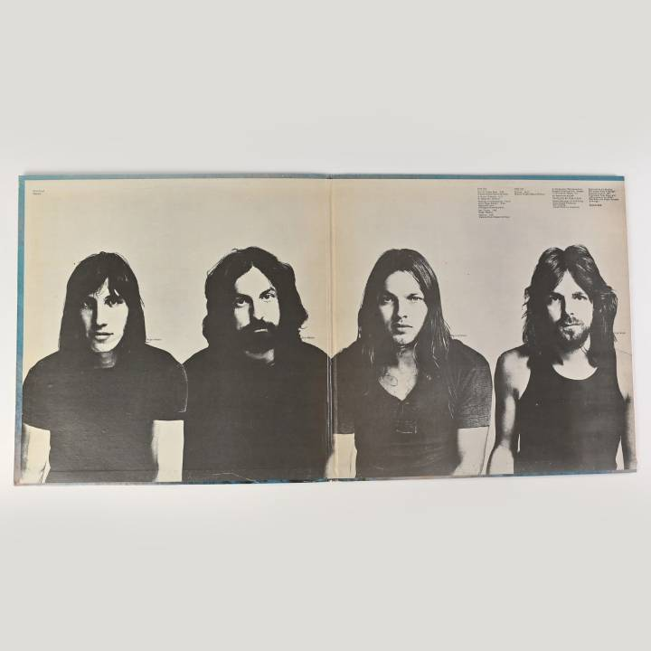

Meddle
Wydany: 31 października 1971 | Wytwórnia: Harvest Records
O albumie
"Meddle" to szósty album studyjny Pink Floyd i kluczowy moment w ewolucji zespołu. Album reprezentuje przejście od psychodelicznego rocka lat 60. do dojrzałego, progresywnego brzmienia, które zdefiniowało ich klasyczne albumy lat 70. To był pierwszy album, na którym zespół w pełni odnalazł swoją tożsamość po odejściu Syd Barretta.
Album jest podzielony na dwie wyraźnie różne części. Pierwsza strona zawiera pięć różnorodnych utworów eksperymentalnych, od spokojnych ballad po agresywne rockowe kompozycje. Druga strona to w całości zajmuje monumentalny, 23-minutowy utwór "Echoes" - epicki majstersztyk, który wielu uważa za najlepszą kompozycję Pink Floyd.
"Meddle" był nagrywany w okresie, gdy zespół eksperymentował z nowymi technikami studyjnymi i instrumentami. Użyli syntezatorów VCS3, efektów taśmowych, i innowacyjnych technik nagrywania, które później zastosowali w "The Dark Side of the Moon". Album był również pierwszym, na którym wszyscy członkowie zespołu równo przyczynili się do kompozycji, tworząc prawdziwie kolektywne dzieło.
Ikoniczne okładki i grafiki

Oryginalna okładka albumu
Zaprojektowana przez Hipgnosis (Storm Thorgerson i Aubrey Powell), okładka przedstawia zbliżenie ludzkiego ucha pod wodą z falami tworzącymi koncentryczne kręgi. Obraz symbolizuje słuchanie i zanurzenie się w dźwięku. Zdjęcie zostało wykonane w basenie, a ucho należało do znajomego zespołu. Różowe i niebieskie kolory tworzą hipnotyzujący, psychodeliczny efekt.

Meddle - środek płyty
Środek (gatefold) winylowego „Meddle" to minimalistyczna, surowa kompozycja: na rozkładówce widać czarno-białe, przycięte portrety czterech członków zespołu, ustawione obok siebie na jasnym tle. Ujęcia są proste i „dokumentalne" — bez scenografii, z naciskiem na sylwetki, włosy i ubrania, co kontrastuje z abstrakcyjną okładką z uchem pod wodą. W prawym górnym rogu umieszczono blok drobnego druku (informacje/credits), a całość utrzymana jest w oszczędnej estetyce typowej dla projektu Hipgnosis.
Lista utworów
| STRONA A | |||
|---|---|---|---|
| Nr. | Tytuł | Długość | Opis |
| 1. | One of These Days | 5:57 | Instrumentalny opener z groźnym basem i syntezatorami. Zawiera jedyną linię tekstu wypowiedzianą przez Nicka Masona przez vocoder: "One of these days, I'm going to cut you into little pieces." Utwór jest pełen napięcia i agresji. |
| 2. | A Pillow of Winds | 5:13 | Spokojna, akustyczna ballada kontrastująca z otwierającym utworem. Delikatne gitary i liryczne teksty o miłości i spokoju. Pokazuje łagodniejszą stronę zespołu. |
| 3. | Fearless | 6:08 | Utwór o odwadze i determinacji, zawiera sample kibiców Liverpool FC śpiewających "You'll Never Walk Alone". Gilmour śpiewa o wspinaczce górskiej jako metaforze życiowych wyzwań. |
| 4. | San Tropez | 3:43 | Lekki, jazzowy utwór o wakacjach na Riwierze Francuskiej. Najbardziej nietypowy utwór na albumie, z humorystycznym tekstem Watersa i swingującym rytmem. |
| 5. | Seamus | 2:15 | Bluesowy jam z "wokalistą" - psem o imieniu Seamus, który wyje do harmonijki. Humorystyczny utwór nagrany w jednym ujęciu. Pies należał do Steve'a Marriotta z Humble Pie. |
| STRONA B | |||
|---|---|---|---|
| Nr. | Tytuł | Długość | Opis |
| 6. | Echoes | 23:31 | Monumentalny epos zajmujący całą drugą stronę albumu. Utwór eksploruje przestrzeń dźwiękową, od delikatnych, ambientowych pasaży po potężne, rockowe kulminacje. Zawiera słynne "ping" z fortepianu Wrighta, soniczną środkową sekcję przypominającą wiatr i wieloryby, oraz jedno z najpiękniejszych gitar solo Gilmoura. Uważany za arcydzieło rocka progresywnego i prekursor "The Dark Side of the Moon". |
Całkowity czas trwania: 46:50
Osiągnięcia i wyróżnienia
Sprzedaż
Ponad 3 miliony sprzedanych kopii na całym świecie
Billboard 200
Miejsce #70 w USA
UK Albums Chart
Miejsce #3 w Wielkiej Brytanii
Certyfikaty USA
2× Platyna (RIAA)
Certyfikaty UK
Gold (BPI)
Oceny krytyków
Uznany za przełomowy album w karierze zespołu
"Echoes" - Arcydzieło rocka progresywnego
"Echoes" to nie tylko najdłuższy utwór na albumie - to jedno z najważniejszych osiągnięć Pink Floyd i kamień milowy rocka progresywnego. 23-minutowa kompozycja zabiera słuchacza w podróż przez różne krajobrazy dźwiękowe, od delikatnych, ambientowych pasaży po potężne, rockowe kulminacje.
Utwór rozpoczyna się słynnym dźwiękiem "ping" - Rick Wright uderzył w fortepian i przepuścił dźwięk przez efekt Leslie, tworząc charakterystyczne, sonarowe echo. Ten dźwięk stał się jednym z najbardziej rozpoznawalnych w historii Pink Floyd i symbolizuje eksplorację głębin - zarówno oceanicznych, jak i psychicznych.
Środkowa sekcja utworu, często nazywana "soniczną burzą", jest najbardziej eksperymentalną częścią. Zespół użył syntezatorów, efektów taśmowych i feedbacku gitarowego do stworzenia dźwięków przypominających wiatr, wieloryby i podwodne krajobrazy. David Gilmour przesuwał metalową kulką po strunach gitary bez progów, tworząc nieziemskie, wyjące dźwięki.
Utwór kończy się powrotem do początkowego motywu, tworząc cykliczną strukturę. Ostatnie słowa są głęboko filozoficzne, sugerując poszukiwanie znaczenia i transcendencji.
Proces twórczy i nagrywanie
"Meddle" był nagrywany między styczniem a sierpniem 1971 roku w kilku różnych studiach, głównie w AIR Studios w Londynie i Morgan Studios. Zespół eksperymentował z nowymi technikami i instrumentami, odkrywając swoje brzmienie.
Po rozczarowującym odbiorze albumu "Atom Heart Mother" (1970), zespół był zdeterminowany, aby stworzyć coś bardziej spójnego i artystycznie satysfakcjonującego. David Gilmour później powiedział: "Meddle był albumem, gdzie po raz pierwszy poczuliśmy, że wiemy, co robimy."
"Echoes" powstało z jamu instrumentalnego, który zespół rozwijał podczas prób. Początkowo nosił roboczy tytuł "Nothing" (część 1-24), ponieważ był podzielony na 24 sekcje. Zespół pracował nad utworem przez miesiące, dodając warstwy, eksperymentując z dźwiękami i strukturą.
Rick Wright miał kluczowy wkład w "Echoes", komponując główny motyw fortepianowy i wiele syntezatorowych tekstur. Roger Waters napisał większość tekstów, inspirowanych książką "I Ching" i koncepcją komunikacji między istotami. Nick Mason stworzył złożone, jazzowe wzory perkusyjne, a David Gilmour dodał swoje charakterystyczne, śpiewające gitary.
Analiza kluczowych utworów
One of These Days
Otwierający utwór albumu to instrumentalny majstersztyk pełen napięcia i energii. Roger Waters i David Gilmour grają na basach przepuszczonych przez efekt Binson Echorec, tworząc pulsujący, hipnotyzujący rytm. Dźwięk jest groźny i niepokojący, jak nadciągająca burza.
Jedyna linia tekstu - "One of these days, I'm going to cut you into little pieces" - jest wypowiadana przez Nicka Masona przez vocoder, co nadaje jej mechaniczny, nieludzki charakter. Mason później żartował, że była to groźba skierowana do dziennikarza muzycznego, który negatywnie recenzował ich albumy.
Utwór był często grany na koncertach i stał się jednym z najbardziej rozpoznawalnych utworów instrumentalnych Pink Floyd. Jego agresywna energia i innowacyjne użycie efektów gitarowych wpłynęło na wiele zespołów rockowych i metalowych.
Fearless
"Fearless" to jeden z najbardziej osobistych utworów Gilmoura na albumie. Tekst, napisany przez Watersa i Gilmoura, opisuje wspinaczkę górską jako metaforę życiowych wyzwań i determinacji.
Najbardziej niezwykłym elementem utworu jest zakończenie, które zawiera nagranie kibiców Liverpool FC śpiewających "You'll Never Walk Alone". Waters, będący fanem Arsenalu, początkowo sprzeciwiał się temu pomysłowi, ale ostatecznie zgodził się. Sample dodaje emocjonalnej głębi i poczucia wspólnoty.
Utwór został nagrany przy użyciu 12-strunowej gitary akustycznej Gilmoura, co nadaje mu bogate, pełne brzmienie. Delikatne, fingerpickingowe partie gitarowe kontrastują z potężnym, stadionowym śpiewem na końcu.
Seamus
"Seamus" to najbardziej kontrowersyjny utwór na albumie - prosty, 12-taktowy blues z psem wyjącym do harmonijki. Dla niektórych to humorystyczny oddech między poważniejszymi utworami, dla innych to niepotrzebny wypełniacz.
Utwór został nagrany w jednym ujęciu w domu Steve'a Marriotta z Humble Pie. Seamus, pies rasy Blue Heeler, naturalnie zaczął wyć, gdy Gilmour grał na harmonijce. Zespół zdecydował się zachować to spontaniczne nagranie, dodając je do albumu jako lekką, zabawną przerwę.
Mimo swojej prostoty, "Seamus" pokazuje ludzką, niepretensjonalną stronę Pink Floyd. W erze, gdy rock progresywny stawał się coraz bardziej poważny i techniczny, zespół nie bał się pokazać swojego poczucia humoru.
"Echoes" w filmie "Live at Pompeii"
W 1972 roku Pink Floyd nagrał koncert w starożytnym amfiteatrze w Pompejach dla filmu dokumentalnego "Pink Floyd: Live at Pompeii". Film nie zawierał publiczności - tylko zespół grający w 2000-letnim amfiteatrze, z Wezuwiuszem w tle.
Wykonanie "Echoes" w Pompejach jest uważane za jedno z najlepszych występów na żywo w historii rocka. Akustyka amfiteatru, dramatyczne tło i intensywność wykonania stworzyły magiczny moment. Gilmour grał na gitarze bez progów, Wright używał syntezatora VCS3, a cały zespół był całkowicie zanurzony w muzyce.
Film "Live at Pompeii" stał się kultowy i jest często cytowany jako jeden z najlepszych filmów koncertowych wszech czasów. Wykonanie "Echoes" jest jego kulminacją - 23 minuty czystej, niekompromisowej muzyki w jednym z najbardziej niezwykłych miejsc na świecie.
Ciekawostki
- "Echoes" było pierwotnie podzielone na 24 części i nosiło roboczy tytuł "Nothing, Parts 1-24"
- Dźwięk "ping" na początku "Echoes" został stworzony przez uderzenie w fortepian i przepuszczenie go przez efekt Leslie
- Środkowa sekcja "Echoes" była synchronizowana z końcową sekwencją filmu "2001: Odyseja kosmiczna" przez fanów
- Stanley Kubrick chciał użyć "Echoes" w filmie "2001", ale zespół odmówił (film powstał przed utworem)
- Seamus, pies z utworu "Seamus", był Blue Heelerem należącym do Steve'a Marriotta
- "One of These Days" był używany jako muzyka wejściowa przez Montreal Canadiens w latach 70.
- Okładka została sfotografowana w basenie - to prawdziwe ucho pod wodą, nie montaż
- Album był pierwszym Pink Floyd, który wszedł na Billboard 200 w USA
- "Fearless" zawiera sample z meczu Liverpool FC vs. Arsenal w 1971 roku
- David Gilmour użył gitary Fender Stratocaster bez progów w "Echoes", co stało się jego znakiem rozpoznawczym
Wpływ i dziedzictwo
"Meddle" był przełomowym momentem dla Pink Floyd. Album udowodnił, że zespół może tworzyć ambitne, progresywne dzieła bez polegania na psychodelicznych eksperymentach ery Syd Barretta. Był to pierwszy album, na którym zespół w pełni odnalazł swoją tożsamość jako kolektyw.
"Echoes" w szczególności wpłynął na rozwój rocka progresywnego i ambientowego. Jego eksploracja przestrzeni dźwiękowej, długie instrumentalne pasaże i filozoficzne teksty stały się wzorem dla niezliczonych zespołów. Muzycy tacy jak Steven Wilson (Porcupine Tree), Trent Reznor (Nine Inch Nails) i Jonny Greenwood (Radiohead) cytowali "Echoes" jako inspirację.
Album był również prekursorem "The Dark Side of the Moon". Wiele technik użytych w "Meddle" - syntezatory, efekty dźwiękowe, długie kompozycje, filozoficzne teksty - zostało udoskonalonych i rozszerzonych w następnym albumie. Bez "Meddle", "Dark Side" mogłoby nigdy nie powstać.
Dzisiaj "Meddle" jest uważany za jeden z najlepszych albumów Pink Floyd, choć jest mniej znany niż ich klasyki lat 70. Dla wielu fanów to najbardziej czysta ekspresja zespołu - moment, gdy byli całkowicie zjednoczeni w swojej wizji artystycznej, zanim napięcia i ego zaczęły ich rozdzielać.